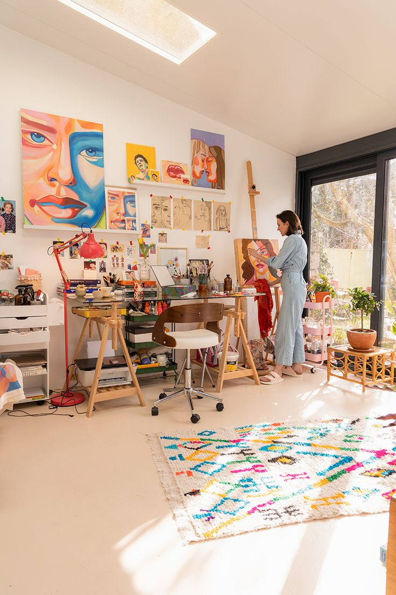
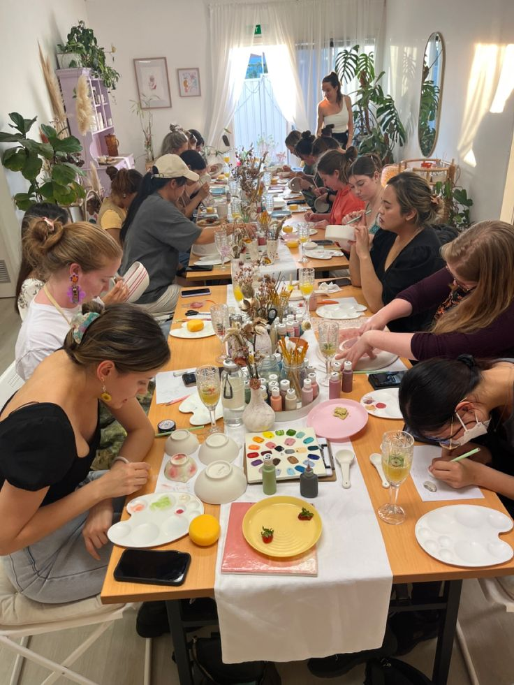
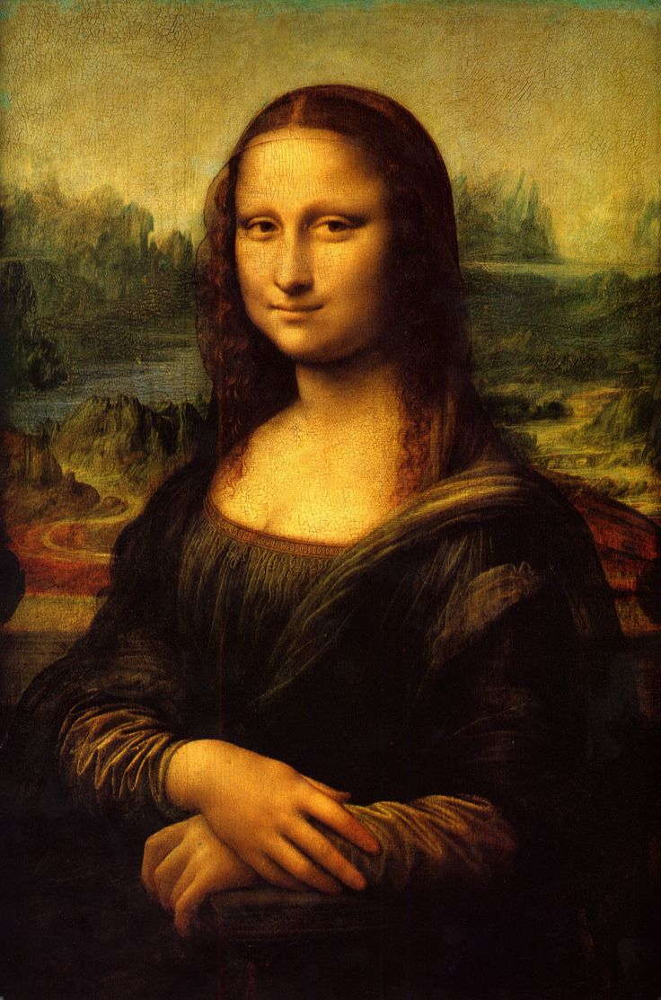

𝓔𝔁𝓹𝓻𝓮𝓼𝓼 𝔂𝓸𝓾𝓻 𝓬𝓻𝓮𝓪𝓽𝓲𝓿𝓲𝓽𝔂 𝓽𝓱𝓻𝓸𝓾𝓰𝓱 𝓪𝓻𝓽!
Painting and drawing are creative ways to express emotions and ideas through art. Whether you're a beginner or an advanced artist, these activities offer endless possibilities for self-expression and personal growth.
Painting and drawing encourage relaxation and reduce stress, allowing you to disconnect from daily pressures and focus on the creative process.
These hobbies enhance hand-eye coordination, fine motor skills, and creativity, all of which contribute to personal growth and confidence.
To get started with painting and drawing, you'll need a few basic materials:
For beginners, it's best to start with basic shapes or even a coloring book to practice control and confidence. As you grow more comfortable, you can experiment with different styles and techniques.
As you progress, try creating detailed portraits, landscapes, or abstract art. The more you practice, the more your skills and creativity will grow.
Join art workshops, local classes, or share your creations on social media platforms. These communities offer great opportunities for feedback, inspiration, and connection with fellow artists.
Did you know? The Mona Lisa took Leonardo da Vinci about 4 years to paint! Imagine the level of detail and skill involved in creating such an iconic masterpiece.
 Unleash your inner artist—pick up a brush today!